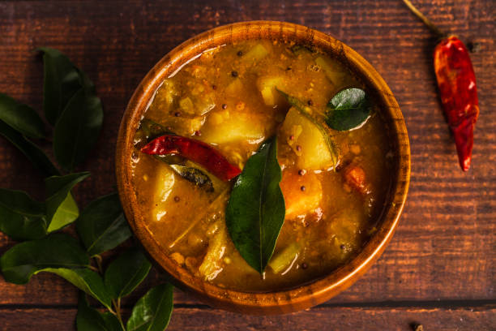

Ingredients:
- 1 cup toor dal
- 1 onion, chopped
- 1 tomato, chopped
- 2 tbsp sambar powder
- Salt to taste
- Curry leaves and mustard seeds

Instructions:
- Cook toor dal and set aside.
- In a pan, sauté onions, tomatoes, and spices.
- Add cooked dal, sambar powder, and water. Let it simmer.
- Serve with idli, dosa, or rice.